Oʻahu ʻŌhiʻa Gradient — Full Report
Study Focus & Emerging Hypotheses (Oʻahu ʻŌhiʻa Gradient via eDNA metabarcoding)
| Hypothesis | Evidence from Analyses | Current Interpretation |
|---|---|---|
| 1. Beta diversity turnover is greater in high-elevation gradients compared to lower sites. | Beta diversity decomposition shows greater dissimilarity between sites at high elevations. | Supported – indicates stronger environmental filtering or dispersal limitation at higher elevations. |
| 2. Site has the highest impact on species composition, with elevation explaining significantly less. | PERMANOVA results: site explains more variation than elevation. | Supported – local habitat conditions appear to dominate over elevation. |
| 3. Higher elevations show less dispersion compared to low and middle elevations. | Beta dispersion analysis confirms lower within-group dispersion at high elevations. | Supported, but contrary to expectations of greater variability in harsher environments. |
| 4. Invasive species richness decreases with elevation. | Proportion of introduced zOTUs declines along the elevation gradient. | Supported – consistent with reduced invasion pressure at higher elevations. |
| 5. Guava harbors more invasive species at all sample elevations compared to koa or ʻōhiʻa (tested only on Manana and ʻAiea ridges). | Pairwise tests show only one significant difference: on Manana, ʻōhiʻa had more invasive species than guava (p < 0.05); all other comparisons not significant. | Not supported – no consistent trend; in one ridge, trend reversed. |
| 6. Strawberry guava communities show the most variance compared to koa and ʻōhiʻa (Manana and ʻAiea only). | PERMANOVA variance and visual inspection indicate higher variance on guava in some cases, but not consistently. | Partially supported – variance pattern evident but ridge-dependent. |
| 7. Lower sample sites accumulate more species richness due to easier invasion. | Linear regression shows richness increases significantly with elevation (β = 0.047 species/m, R² = 0.28, p = 0.017). | Not supported – trend is opposite of prediction; higher richness at higher elevations. |
| 8. All transects follow the same trends. | Poamoho patterns differ strongly from other ridges; pattern confirmed as genuine. | Not supported – cause unclear; may need to be excluded?! if not interpretable. |
1 🌍 Plot 1: Sample Design and map
Figure 1.: Ridge sampling tracks across Oʻahu, Hawaiʻi. Sampling tracks (colored by ridge) represent arthropod eDNA collections from Metrosideros polymorpha (ʻōhiʻa) along five elevation gradients. Base elevation was derived from a digital elevation model clipped to Oʻahu’s outline, with values normalized to start at sea level. Labels indicate the minimum and maximum elevation of each ridge transect (in meters). Map elements include scale bar and north arrow for orientation. scale bar and north arrow for orientation.
2 📊 Supl Plots: Data Preparation and Setup and initial visualiztion
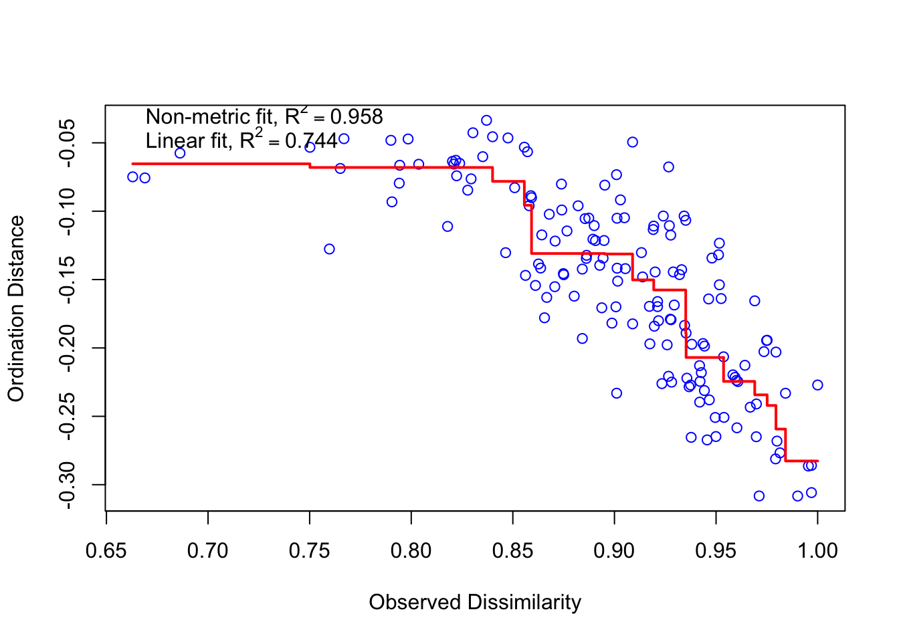
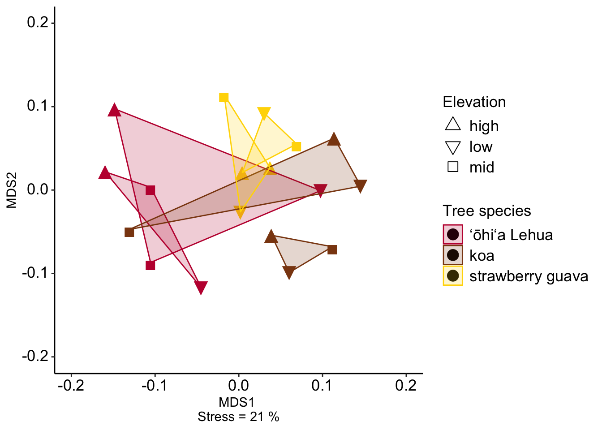
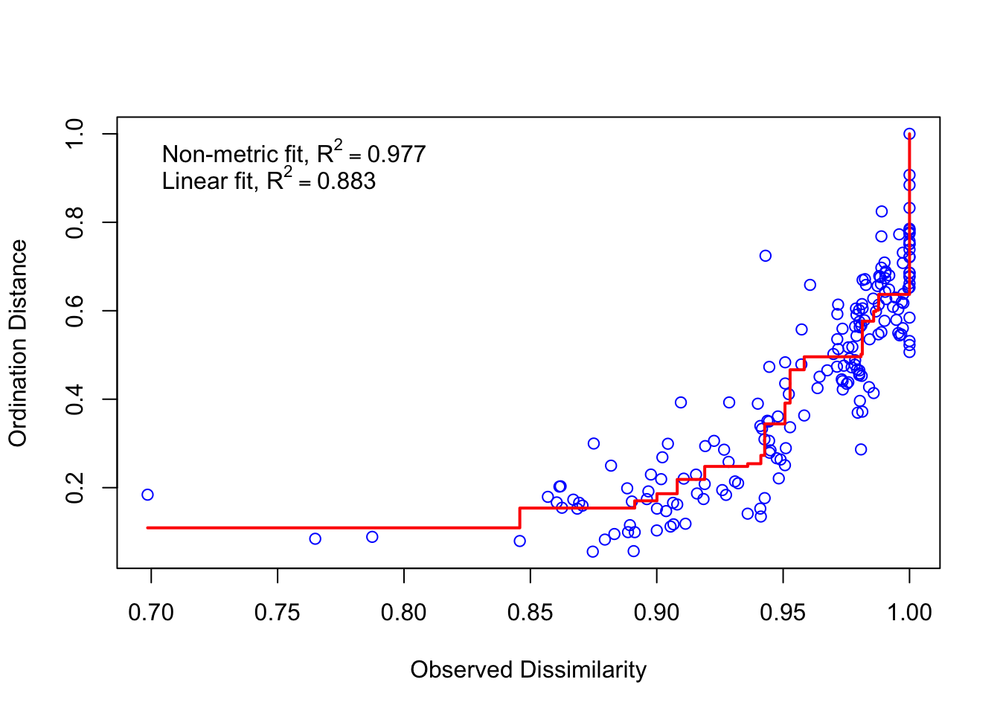
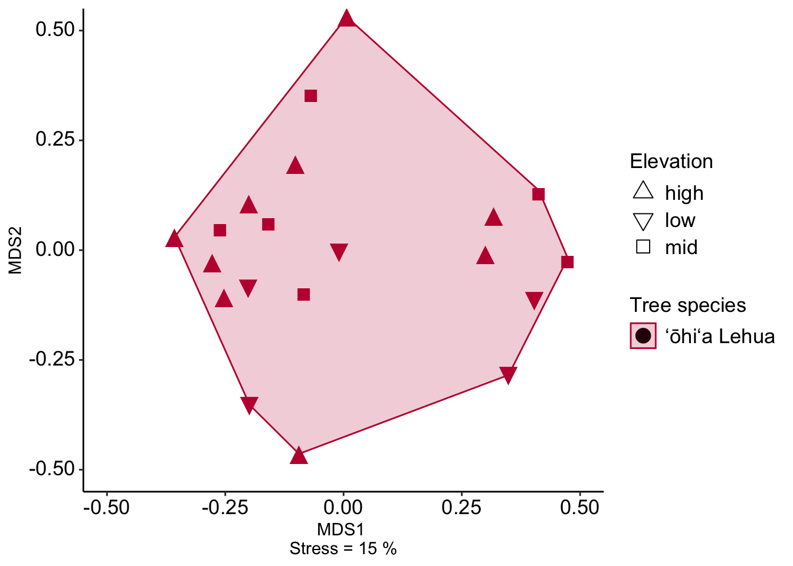
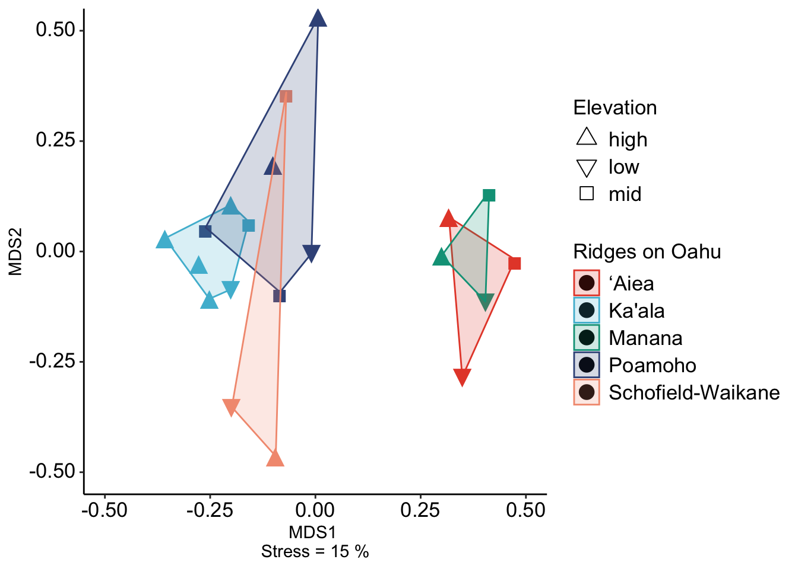
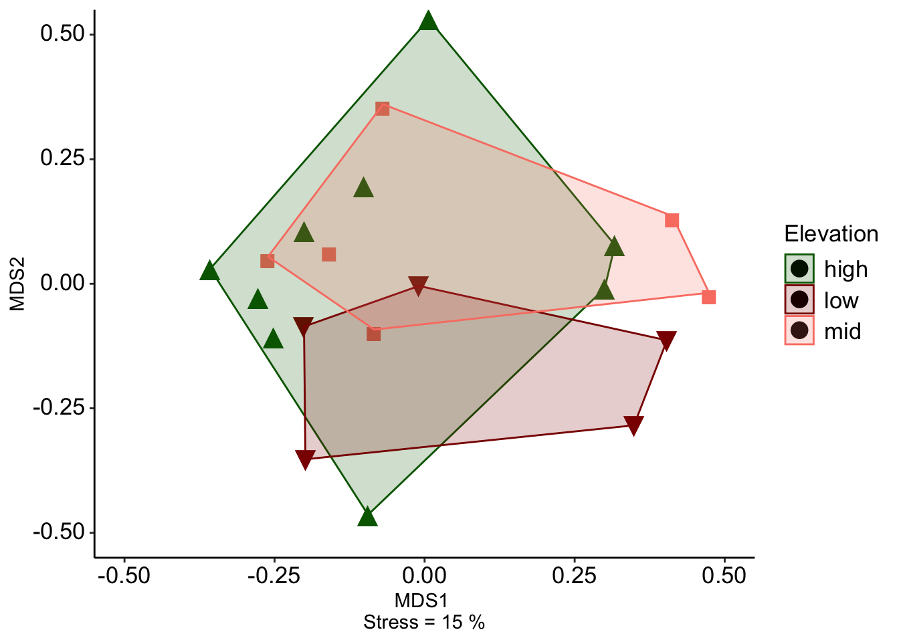
3 📊 Plot 2: NMDS panel
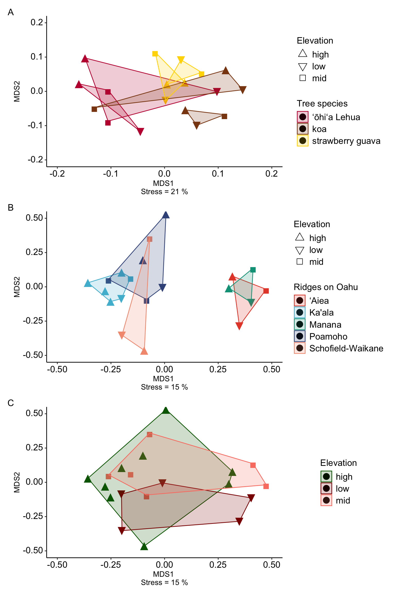
Figure X: Arthropod assemblages differ more strongly by site than elevation: Two-dimensional NMDS plots based on presence-absence data of arthropod communities from eDNA samples show that sampling site explains more variation in community composition than elevation.Top panel Comparison of the three most common trees across a small elevation gradient on Aiea & Manana Ridge. Stress value above 20% Middle panel: The same NMDS ordination, now grouped by sampling site; colored polygons highlight that samples from the same site cluster tightly despite differing in elevation. Each shape indicates the elevation level of the sample (triangles = high, inverted triangles = low, squares = mid). Stress value of 15% indicates a reliable two-dimensional representation of dissimilarities. Bottom panel: Samples grouped by elevation level (high, mid, low) across all sites; shaded polygons connect samples from the same elevation.
4 Statistical Analyses mainly focusing on ß-diversity
4.1 Section 1: Insect-Community differences by Trees (Manana and Aiea Ridge)
Permutation test for adonis under reduced model
Permutation: free
Number of permutations: 999
adonis2(formula = bray_leke ~ commonname, data = meta_leke)
Df SumOfSqs R2 F Pr(>F)
Model 2 0.7383 0.09957 0.8294 0.899
Residual 15 6.6766 0.90043
Total 17 7.4149 1.00000 While the PERMANOVA test did not find significant differences in community composition between tree species (p = 0.895), the NMDS ordination suggests that samples from ʻōhiʻa, koa, and strawberry guava form visually distinct clusters. This pattern may indicate subtle differences in arthropod communities that are not statistically detectable at the current sample size. Also r squared value is very low, indicating that tree type does not explain much of the variation in community composition.
4.2 📊 Supl Plot: Beta-dispersion Test: Tree Type Group Variability
Permutation test for homogeneity of multivariate dispersions
Permutation: free
Number of permutations: 999
Response: Distances
Df Sum Sq Mean Sq F N.Perm Pr(>F)
Groups 2 0.0008448 0.00042241 0.5116 999 0.627
Residuals 15 0.0123847 0.00082565 There is no significant difference in dispersion (beta diversity spread) among tree species (p = 0.588). This suggests the PERMANOVA assumption of equal group dispersions is not violated, which is good.
4.3 Section 2: ʻŌhiʻa – Community differences by Site
Permutation test for adonis under reduced model
Permutation: free
Number of permutations: 999
adonis2(formula = bray_ohia ~ sample_site, data = ohia_df)
Df SumOfSqs R2 F Pr(>F)
Model 6 3.4183 0.21033 1.2873 0.001 ***
Residual 29 12.8339 0.78967
Total 35 16.2522 1.00000
---
Signif. codes: 0 '***' 0.001 '**' 0.01 '*' 0.05 '.' 0.1 ' ' 1A PERMANOVA based on Bray-Curtis dissimilarities showed that arthropod community composition within ʻōhiʻa stands varied significantly by sampling site (R² = 0.21, p = 0.002), suggesting strong site-specific effects across the Oʻahu gradient.
4.4 📊 Supl Plot: Beta Diversity Decomposition
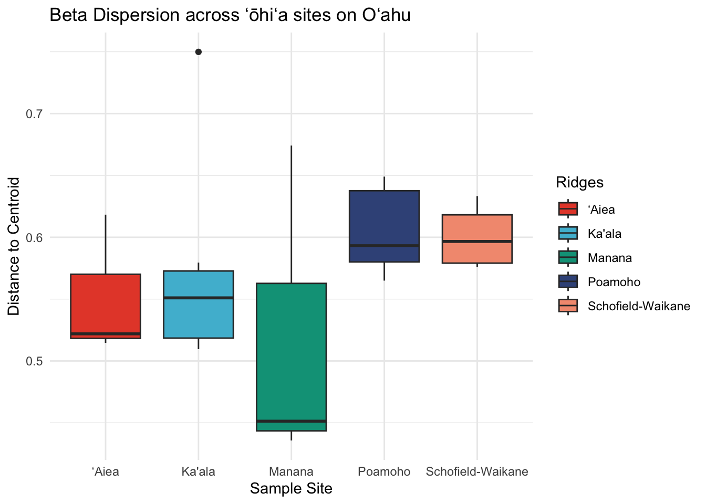
Permutation test for homogeneity of multivariate dispersions
Permutation: free
Number of permutations: 999
Response: Distances
Df Sum Sq Mean Sq F N.Perm Pr(>F)
Groups 6 0.041114 0.0068523 1.8714 999 0.104
Residuals 29 0.106185 0.0036615 Although community dispersion varied visually across sampling sites, a test for homogeneity of multivariate dispersions was not statistically significant (F = 1.87, p = 0.119). This supports the validity of the PERMANOVA result, indicating that observed differences in arthropod community composition across ʻōhiʻa sites are not driven by differences in within-site variability.
4.5 Section 3: ʻŌhiʻa – Community differences by elevation
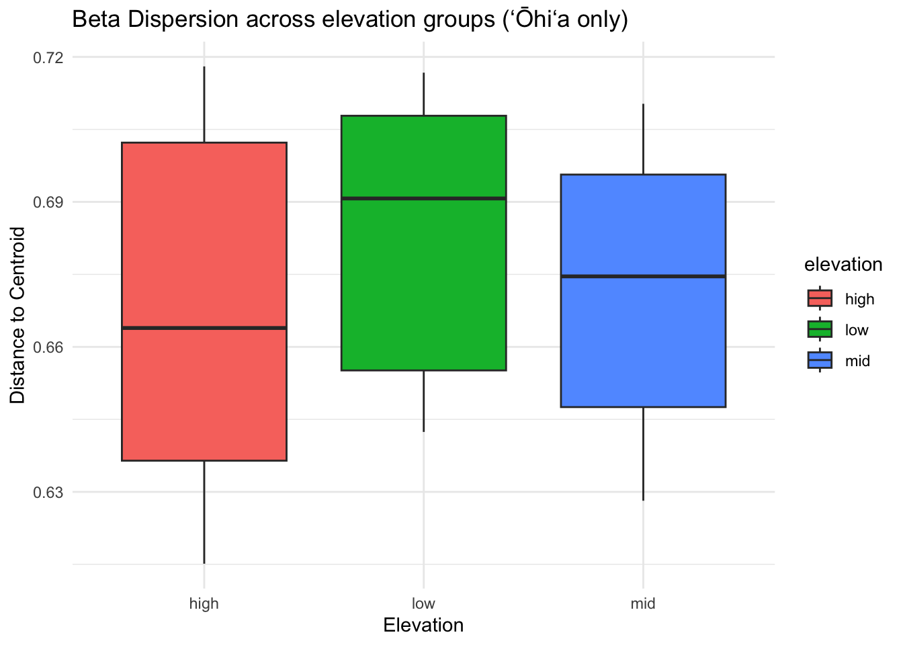
Permutation test for adonis under reduced model
Permutation: free
Number of permutations: 999
adonis2(formula = bray_ohia ~ elevation, data = ohia_df)
Df SumOfSqs R2 F Pr(>F)
Model 2 0.9365 0.05762 1.0089 0.404
Residual 33 15.3157 0.94238
Total 35 16.2522 1.00000
Permutation test for homogeneity of multivariate dispersions
Permutation: free
Number of permutations: 999
Response: Distances
Df Sum Sq Mean Sq F N.Perm Pr(>F)
Groups 2 0.011088 0.0055442 5.1781 999 0.012 *
Residuals 33 0.035333 0.0010707
---
Signif. codes: 0 '***' 0.001 '**' 0.01 '*' 0.05 '.' 0.1 ' ' 1We found no significant differences in arthropod community composition across elevations within ʻōhiʻa stands (PERMANOVA: R² = 0.058, p = 0.401). However, a test for homogeneity of dispersions revealed that beta diversity varied significantly across elevations (F = 5.18, p = 0.013), indicating that community consistency differs with elevation despite no shift in centroids.
Permutation test for adonis under reduced model
Permutation: free
Number of permutations: 999
adonis2(formula = bray_ohia_oahu ~ sample_site + elevation, data = ohia_oahu_df)
Df SumOfSqs R2 F Pr(>F)
Model 6 3.2667 0.33582 1.264 0.001 ***
Residual 15 6.4607 0.66418
Total 21 9.7274 1.00000
---
Signif. codes: 0 '***' 0.001 '**' 0.01 '*' 0.05 '.' 0.1 ' ' 1A combined PERMANOVA model revealed that site and elevation together significantly structured arthropod community composition within ʻōhiʻa stands across Oʻahu (R² = 0.34, p = 0.001). These variables jointly explained ~34% of the observed variation, indicating that spatial and elevational differences play a strong role in shaping arthropod assemblages within this native forest type.
5 Beta-diversity within between subsets
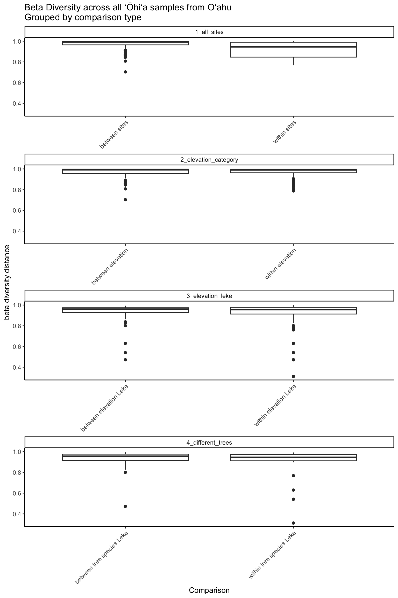
Kruskal-Wallis rank sum test
data: distance by comparison
Kruskal-Wallis chi-squared = 195.47, df = 7, p-value < 2.2e-16
Pairwise comparisons using Wilcoxon rank sum test with continuity correction
data: beta_comp$distance and beta_comp$comparison
between elevation between elevation Leke
between elevation Leke 3.7e-07 -
between sites 0.92 8.1e-09
between tree species Leke 2.9e-07 0.92
within elevation 0.76 1.4e-07
within elevation Leke 1.2e-14 0.92
within sites 2.9e-07 0.98
within tree species Leke 1.9e-10 0.60
between sites between tree species Leke
between elevation Leke - -
between sites - -
between tree species Leke 8.1e-09 -
within elevation 0.60 2.8e-07
within elevation Leke < 2e-16 0.98
within sites 8.1e-09 0.92
within tree species Leke 1.7e-13 0.76
within elevation within elevation Leke within sites
between elevation Leke - - -
between sites - - -
between tree species Leke - - -
within elevation - - -
within elevation Leke 3.9e-16 - -
within sites 6.9e-07 0.92 -
within tree species Leke 6.9e-11 0.61 0.92
P value adjustment method: fdr Pairwise Wilcoxon tests comparing Bray-Curtis dissimilarities revealed significantly greater beta diversity between elevations, tree species, and sites than within these groups (FDR-corrected p < 0.001 for most contrasts). Notably, arthropod communities differed significantly between tree species where all three co-occurred, and between elevation bands both within and across sites. Within-site and within-elevation comparisons consistently showed lower dissimilarity, indicating stronger community cohesion at those scales.
6 Beta Diversity Decomposition based on Sorensen Family
We want to expose the components of beta diversity, specifically turnover and nestedness, using the Sorensen index. This will help us understand how much of the dissimilarity is due to species turnover versus nestedness.
-Are differences between communities driven by species replacement (turnover)?
-Or by nestedness (e.g. lowland sites losing taxa)?
-Which sites are more compositionally heterogeneous (high within-site turnover)?
This goes beyond Bray-Curtis, offering more ecological insight.
NMDS based on beta.sim will show us the turnover component of beta diversity, which is the species replacement component. This will help us understand how much of the dissimilarity is due to species turnover versus nestedness.
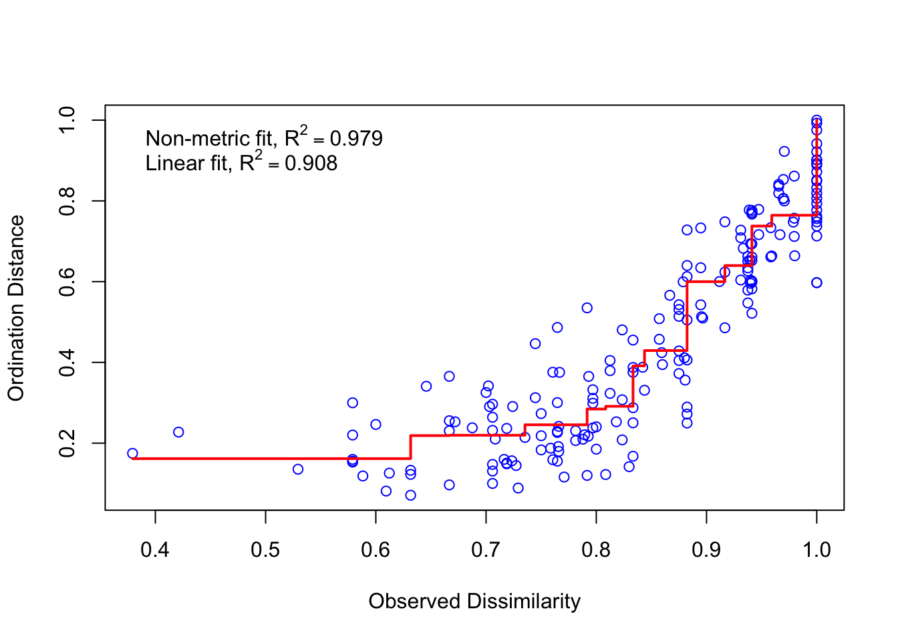
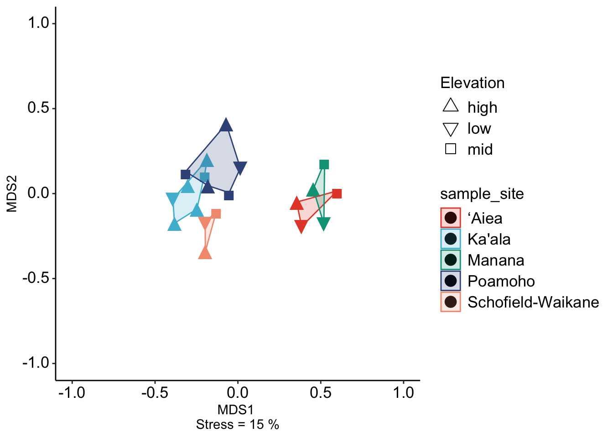
Call:
protest(X = nmdsohia, Y = nmds_ohia_turn)
Number of objects: 20 Number of dimensions: 2
Procrustes sum of squares:
0.2084676
Procrustes root mean squared error:
0.1020949
Quantiles of Procrustes errors:
Min 1Q Median 3Q Max
0.01654788 0.03764732 0.07502910 0.10889206 0.29041237
Rotation matrix:
[,1] [,2]
[1,] 0.99994333 -0.01064552
[2,] 0.01064552 0.99994333
Translation of averages:
[,1] [,2]
[1,] 2.922154e-18 -3.379719e-18
Scaling of target:
[1] 0.8896811MDS ordinations based on Bray–Curtis and Sørensen turnover dissimilarities both revealed strong ridge-level structuring of arthropod communities. While the Bray–Curtis NMDS (Stress = 15%) yielded a slightly better fit than the Sørensen-based NMDS (Stress = 17%), both metrics showed consistent clustering. The Sørensen ordination emphasizes species turnover alone, confirming that site-level differences are driven not only by shifts in abundance but also by distinct species pools. The Bray–Curtis plot further suggests that relative abundance patterns reinforce community structure, particularly within elevation bands.
A Procrustes analysis comparing the Bray–Curtis and Sørensen turnover NMDS ordinations revealed a high degree of congruence (Procrustes sum of squares = 0.208, RMSE = 0.102), with minimal rotation or scaling required. This confirms that site-level community differences are primarily driven by species turnover, and that patterns are consistent across presence–absence and abundance-based metrics
# A tibble: 5 × 2
sample_site mean_turnover
<chr> <dbl>
1 Ka'ala 0.763
2 Manana 0.636
3 Poamoho 0.730
4 Schofield-Waikane 0.807
5 ʻAiea 0.763Permutation test for adonis under reduced model
Permutation: free
Number of permutations: 999
adonis2(formula = beta_part$beta.sim ~ sample_site + elevation, data = ohia_meta)
Df SumOfSqs R2 F Pr(>F)
Model 6 3.1945 0.46492 1.8826 0.001 ***
Residual 13 3.6766 0.53508
Total 19 6.8711 1.00000
---
Signif. codes: 0 '***' 0.001 '**' 0.01 '*' 0.05 '.' 0.1 ' ' 1
Permutation test for homogeneity of multivariate dispersions
Permutation: free
Number of permutations: 999
Response: Distances
Df Sum Sq Mean Sq F N.Perm Pr(>F)
Groups 4 0.040677 0.010169 0.7795 999 0.568
Residuals 15 0.195683 0.013045
Kruskal-Wallis rank sum test
data: mean_turnover by sample_site
Kruskal-Wallis chi-squared = 4, df = 4, p-value = 0.406
Pairwise comparisons using Wilcoxon rank sum exact test
data: site_turnover$mean_turnover and site_turnover$sample_site
ʻAiea Ka'ala Manana Poamoho
Ka'ala 1 - - -
Manana 1 1 - -
Poamoho 1 1 1 -
Schofield-Waikane 1 1 1 1
P value adjustment method: fdr Decomposition of beta diversity showed that community dissimilarity among ʻōhiʻa stands was primarily driven by species turnover, rather than nestedness. A PERMANOVA based on turnover distances revealed significant effects of site and elevation (R² = 0.38, p = 0.001), while a dispersion test confirmed homogeneity of within-group variance (p = 0.679). Mean within-site turnover ranged from 0.68 to 0.81, with no significant differences among sites (Kruskal–Wallis p = 0.406), indicating consistently high compositional variability across the landscape.
7 Geospatial Distance Decay and Mantel Test
Call:
lm(formula = bray_vals ~ geo_vals)
Residuals:
Min 1Q Median 3Q Max
-0.62590 -0.01083 0.01616 0.03756 0.06456
Coefficients:
Estimate Std. Error t value Pr(>|t|)
(Intercept) 9.331e-01 4.735e-03 197.0 < 2e-16 ***
geo_vals 1.881e-06 2.767e-07 6.8 2.86e-11 ***
---
Signif. codes: 0 '***' 0.001 '**' 0.01 '*' 0.05 '.' 0.1 ' ' 1
Residual standard error: 0.06514 on 526 degrees of freedom
Multiple R-squared: 0.0808, Adjusted R-squared: 0.07905
F-statistic: 46.24 on 1 and 526 DF, p-value: 2.856e-11Community dissimilarity increased significantly with geographic distance (R² = 0.081, p < 0.0001). While the effect size is modest, this supports a weak but significant distance-decay pattern of arthropod communities across ridges and elevations. Even across small spatial scales, localized turnover contributes to beta diversity.
Mantel statistic based on Pearson's product-moment correlation
Call:
mantel(xdis = as.dist(geo_dist), ydis = bray_dist, method = "pearson", permutations = 9999)
Mantel statistic r: 0.2842
Significance: 1e-04
Upper quantiles of permutations (null model):
90% 95% 97.5% 99%
0.0792 0.1038 0.1250 0.1483
Permutation: free
Number of permutations: 99998 📊 Supl Plot: Mantel-test and Distance Decay Plot
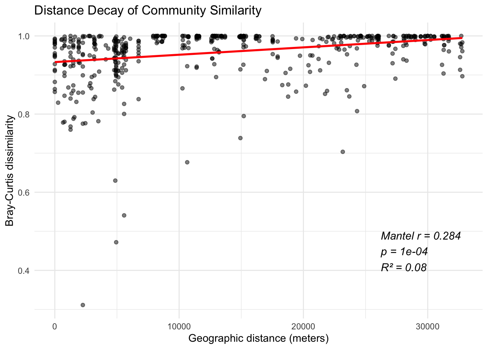
A Mantel test revealed a significant correlation between Bray-Curtis dissimilarity and geographic distance (r = 0.284, p = 0.0001), indicating a moderate but statistically robust distance-decay pattern in arthropod community composition across sampling sites.
This suggests that geographic separation contributes to community turnover, even after accounting for local habitat effects. The result aligns with the idea that dispersal limitation or historical biogeography plays a role in shaping beta diversity along Hawaiian forest gradients.
9 Summary initial analyses
This report demonstrates that arthropod communities across Hawaiian forest gradients are shaped by a combination of spatial structure, elevational zonation, and forest composition. Using eDNA-based metabarcoding and a suite of multivariate analyses, we find:
Community composition in ʻōhiʻa forests varies significantly across sites (PERMANOVA R² = 0.21, p = 0.002) and is further influenced by elevation (combined R² = 0.34, p = 0.001).
Tree species identity, when tested in co-occurring sites (e.g., Manana and ʻAiea), does not explain significant variation in community structure (p = 0.895), though NMDS ordinations suggest subtle clustering.
Beta diversity decomposition reveals that community differences are primarily driven by species turnover rather than nestedness, with turnover significantly structured by site and elevation (R² = 0.38, p = 0.001).
Beta-dispersion patterns support consistent within-site heterogeneity and do not confound PERMANOVA results.
Distance–decay patterns indicate a weak but significant effect of geographic distance on community dissimilarity (Mantel r = 0.284, p = 0.0001), suggesting that even over short distances, dispersal limitation or spatial structuring contributes to beta diversity.
Together, these findings highlight the strong role of site-specific conditions and elevation in structuring arthropod communities in Hawaiian forests, while tree species identity plays a secondary role. The integration of turnover-based decomposition and spatial statistics adds ecological depth and supports the use of eDNA as a scalable tool for arthropod biodiversity monitoring across complex landscapes.
10 Comparing Invasive Status Predictions vs Blast or Ibis
| Summary of Invasive Status Predictions | |||
| Prediction Method |
Invasive Status
|
||
|---|---|---|---|
| introduced | native | No information available | |
| Blast | 763 | 64 | 24 |
| Ibis | 433 | 22 | 396 |
| NiClassify | 394 | 457 | 0 |
| Data obtained through Ibis geolocation API, NIClassify predictions, BLAST mapping and species lookup | |||
11 🌱🌲🌳 Leke Transect Tree Comparison – Cleaned Code Chunk
12 📊 Plot 3: UpSet plot by BLAST status as example
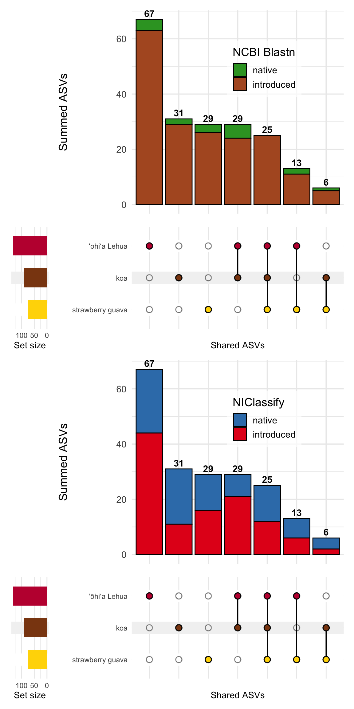
UpSet plots showing shared and unique zOTUs across co-occurring native (ʻōhiʻa, koa) and introduced (strawberry guava) trees on Oʻahu. Bars are colored by invasion status as inferred from BLAST matches (top) and NIClassify predictions (bottom).
Asymptotic General Symmetry Test
data: status by
classifier (NiClassify, Blast)
stratified by zotu
chi-squared = 51.969, df = 1, p-value = 5.638e-13We found a significant difference in invasion status assignments between BLAST and NIClassify across zOTUs (asymptotic symmetry test, χ² = 51.97, df = 1, p = 5.6 × 10⁻¹³), demonstrating that the choice of classifier impacts ecological interpretation of community composition.
13 📊 Supl. Plot : Heatmap of Confusion Matrix
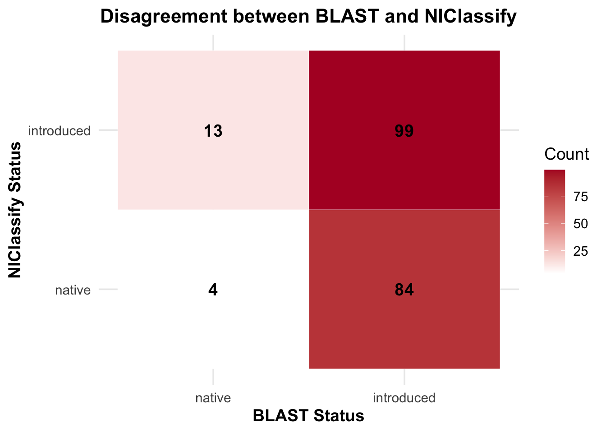
Figure X. Confusion matrix comparing invasion status assignments for zOTUs by BLAST (x-axis) and NIClassify (y-axis) on the Lekes transect. Cell values represent the number of zOTUs assigned to each combination. The majority of assignments are “introduced” by both classifiers, but a considerable number are classified as “native” by NIClassify and “introduced” by BLAST, indicating a significant difference in classifier behavior (symmetry test, p < 0.001).
14 ⛰️ Elevation Bands and Invasion Status across all Oahu ridges
15 📊 Plot 4: Invasion among elevation bands
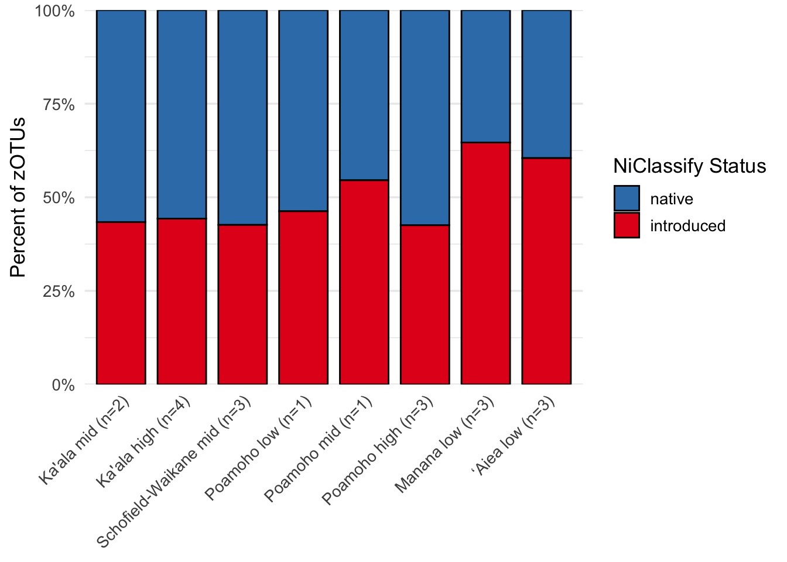
Stacked bar chart showing the percentage of unique zOTUs, classified as native (blue) or introduced (red), within each elevation band—low, mid, and high—across the five Oʻahu ridges: Ka‘ala, Schofield-Waikane, Poamoho, Manana, and ʻAiea. Elevation bands were defined by the 33rd and 67th percentile breaks of sampled elevations for each ridge, with the number of samples per band shown in parentheses on the x-axis (n). The consistently higher proportion of introduced zOTUs at lower elevations—particularly on Manana and ʻAiea—contrasts with a greater native zOTU representation at higher bands, suggesting an elevation-dependent invasion gradient in Oʻahu’s ʻōhiʻa forests.
Call:
geepack::geeglm(formula = cbind(introduced, native) ~ elev_band,
family = binomial, data = inv_by_sample, id = ridge_id, corstr = "exchangeable")
Coefficients:
Estimate Std.err Wald Pr(>|W|)
(Intercept) 0.3644 0.1635 4.968 0.02582 *
elev_bandmid -0.5532 0.2460 5.057 0.02453 *
elev_bandhigh -0.4602 0.1459 9.947 0.00161 **
---
Signif. codes: 0 '***' 0.001 '**' 0.01 '*' 0.05 '.' 0.1 ' ' 1
Correlation structure = exchangeable
Estimated Scale Parameters:
Estimate Std.err
(Intercept) 0.03849 0.003756
Link = identity
Estimated Correlation Parameters:
Estimate Std.err
alpha -0.1953 0.1439
Number of clusters: 5 Maximum cluster size: 6 We used a binomial Generalized Estimating Equation (GEE) to test the effect of elevation band (low, mid, high) on the proportion of introduced zOTUs, with ridge as the clustering variable.
The model revealed a significant effect of elevation band (Wald χ² = 9.95, df = 2, p = 0.007), with both the mid (estimate = –0.55, p = 0.025) and high (estimate = –0.46, p = 0.0016) elevation bands showing significantly lower odds of introduced zOTUs compared to the low band.
16 📊 Plot 5: UpSet plot of all five ridges
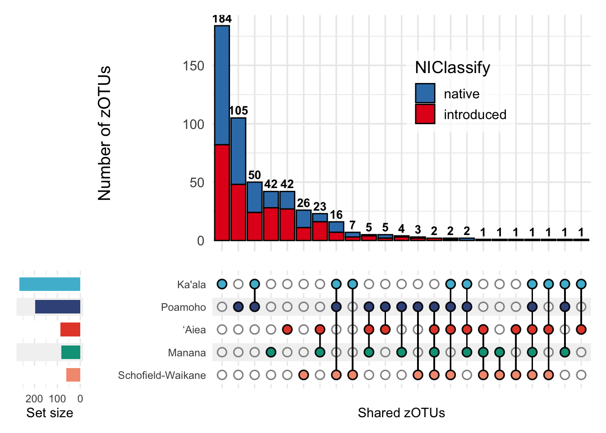
17 📊 Plot 6: Statistical differences of invasion between tree species on ʻAiea and Manana ridges
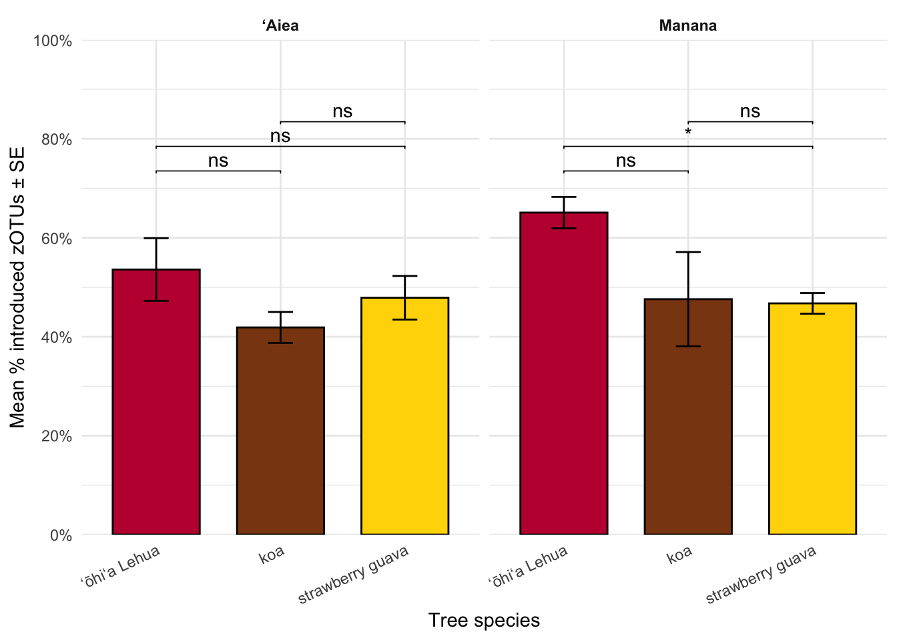
18 Summary invasion status analysis
Data & status integration. We merged NIClassify predictions with curated BLAST/IBIS assignments, normalized case, and treated blanks as NA. Status was summarized per method (native / introduced / unknown) with a gt table. Tree comparisons (Leke transect). Presence/absence per ZOTU across ʻōhiʻa, koa, and guava; intersections visualized with ComplexUpset. Top bars colored by NIClassify or BLAST status. Classifier disagreement. For ZOTUs with both assignments, we tested symmetry of the 2×2 status table (native vs introduced) across classifiers using coin::symmetry_test with ZOTU as a blocking factor. Elevation effects (ʻōhiʻa on Oʻahu). We assigned elevation bands (terciles), computed % introduced per site×band, plotted stacked bars, and fit a binomial GEE (introduced vs native) with ridge as cluster. Ridge overlap. UpSet across five ridges with NIClassify coloring. Tree contrasts within ridges. Mean % introduced per tree, SE bars, pairwise tests with Holm correction (stars plotted).
Results support H2: introduced taxa are more prevalent at lower elevations, with a consistent decline up the gradient.
Combined with your TITAN (~500 m community breakpoint), this suggests a transition zone where lower-elevation assemblages (richer in introduced taxa) give way to higher-elevation assemblages.
H3 (site effects): UpSet/ridge panels and GEE clustering by ridge indicate ridge/site structure matters beyond elevation alone; we’re not just seeing a smooth cline.
19 📊 Plot 7: Species Richness across all ’Ōhi‘a samples from O‘ahu, grouped by elevation and ridge
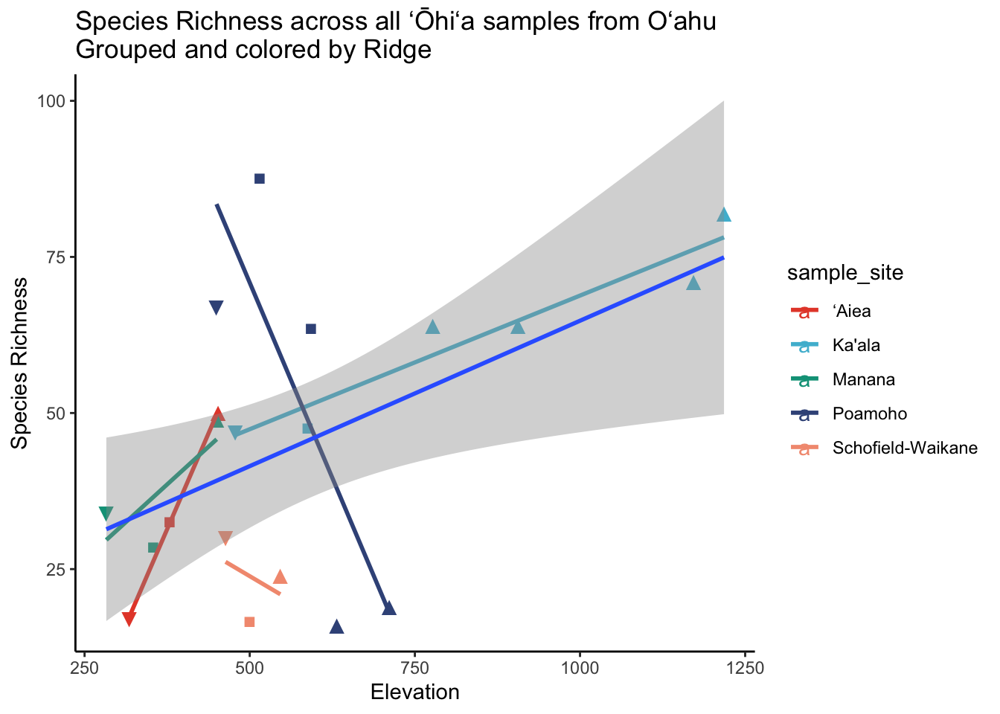
Call:
lm(formula = richness ~ elevation_m, data = sr_hight)
Residuals:
Min 1Q Median 3Q Max
-32.34 -11.34 2.52 9.66 45.80
Coefficients:
Estimate Std. Error t value Pr(>|t|)
(Intercept) 18.2022 11.3138 1.61 0.125
elevation_m 0.0466 0.0177 2.64 0.017 *
---
Signif. codes: 0 '***' 0.001 '**' 0.01 '*' 0.05 '.' 0.1 ' ' 1
Residual standard error: 19.8 on 18 degrees of freedom
Multiple R-squared: 0.279, Adjusted R-squared: 0.238
F-statistic: 6.95 on 1 and 18 DF, p-value: 0.0168
Call:
lm(formula = richness ~ elevation_m + sample_site, data = sr_hight)
Residuals:
Min 1Q Median 3Q Max
-36.03 -7.01 -0.04 9.86 38.75
Coefficients:
Estimate Std. Error t value Pr(>|t|)
(Intercept) 24.1931 15.5318 1.56 0.14
elevation_m 0.0239 0.0274 0.87 0.40
sample_siteKa'ala 18.0281 19.1087 0.94 0.36
sample_siteManana 4.4924 16.1914 0.28 0.79
sample_sitePoamoho 12.7554 15.4526 0.83 0.42
sample_siteSchofield-Waikane -12.5387 16.5147 -0.76 0.46
Residual standard error: 19.8 on 14 degrees of freedom
Multiple R-squared: 0.438, Adjusted R-squared: 0.237
F-statistic: 2.18 on 5 and 14 DF, p-value: 0.115Linear mixed model fit by REML ['lmerMod']
Formula: richness ~ elevation_m + (1 | sample_site)
Data: sr_hight
REML criterion at convergence: 175.6
Scaled residuals:
Min 1Q Median 3Q Max
-1.634 -0.573 0.127 0.488 2.313
Random effects:
Groups Name Variance Std.Dev.
sample_site (Intercept) 0 0.0
Residual 392 19.8
Number of obs: 20, groups: sample_site, 5
Fixed effects:
Estimate Std. Error t value
(Intercept) 18.2022 11.3138 1.61
elevation_m 0.0466 0.0177 2.64
Correlation of Fixed Effects:
(Intr)
elevation_m -0.920
optimizer (nloptwrap) convergence code: 0 (OK)
boundary (singular) fit: see help('isSingular')Species richness increased significantly with elevation across all Oʻahu ʻōhiʻa samples (linear regression: β = 0.047 species/m, R² = 0.28, p = 0.017). Including ridge as an additional factor in multiple regression and mixed-effects models did not improve model fit, and the elevation effect was robust to site effects (see Tables).
N samples: 34 | N taxa (pre-filter): 854 Min. 1st Qu. Median Mean 3rd Qu. Max.
283 360 452 524 577 1218 N taxa kept (occ >= 3): 115 ienv.cp zenv.cp freq maxgrp IndVal zscore 5% 10% 50% 90%
zotu1016 457.7 457.7 4 1 21.05 1.56 335.7 378.9 452.0 465.1
zotu1017 457.7 457.7 6 1 31.58 2.57 366.4 449.9 457.7 465.1
zotu1045 452.0 452.0 3 1 17.65 1.82 317.6 317.6 378.9 457.7
zotu1052 452.0 452.0 6 1 33.33 3.08 353.9 366.4 452.0 465.1
zotu1054 612.3 612.3 4 2 41.57 5.20 414.2 449.7 612.3 652.1
zotu1066 414.2 414.2 3 2 13.64 0.65 413.6 414.2 449.7 514.1
zotu109 590.2 590.2 3 2 37.50 5.60 530.5 554.0 590.2 994.6
zotu1125 457.7 457.7 3 2 20.00 2.07 456.6 457.7 457.7 744.2
zotu1167 449.9 449.9 3 1 21.43 2.37 353.6 353.9 449.9 451.0
zotu118 566.9 507.5 7 2 54.28 4.60 499.3 507.5 566.9 744.2
zotu12 449.9 449.9 5 1 33.33 2.81 317.6 317.6 449.9 451.0
zotu122 449.9 457.7 6 1 26.03 1.36 353.9 353.9 451.0 457.7
zotu123 744.2 507.5 5 2 39.34 3.05 414.2 496.7 566.9 744.2
zotu124 470.8 457.7 5 2 35.71 3.61 465.1 465.1 569.5 841.4
zotu1265 449.9 449.9 4 1 28.57 3.31 299.4 315.9 378.9 451.0
zotu1270 744.2 566.9 3 2 39.02 3.69 530.7 543.8 678.3 994.6
zotu129 481.0 481.0 3 2 23.08 2.56 353.9 467.9 489.2 994.6
zotu1299 457.7 470.8 3 1 15.79 1.12 365.7 414.4 451.0 457.7
zotu13 470.8 470.8 4 2 16.38 0.88 353.9 353.9 470.8 930.1
zotu144 744.2 590.2 3 2 38.96 4.18 515.1 554.0 590.2 744.2
zotu1451 449.9 457.7 5 1 27.48 2.33 353.9 366.4 449.9 457.7
zotu1452 457.7 457.7 5 2 33.33 2.85 457.7 457.7 457.7 590.2
zotu1454 457.7 457.7 6 1 31.58 3.09 353.9 366.4 457.7 465.1
zotu147 530.7 566.9 5 1 20.83 0.89 335.7 353.9 457.7 530.7
zotu1481 491.8 491.8 8 2 56.63 5.34 457.7 457.7 491.8 714.7
zotu1494 449.7 449.9 3 2 14.29 0.64 353.0 414.4 449.9 451.5
zotu15 470.8 470.8 5 2 28.57 1.82 414.2 414.2 470.8 523.0
zotu151 452.0 452.0 7 1 38.89 2.45 317.6 335.7 457.7 465.1
zotu1541 414.2 414.2 3 1 25.00 3.03 299.4 300.2 378.9 414.2
zotu1543 566.9 566.9 3 2 22.06 2.69 464.1 465.1 551.4 704.4
zotu1548 449.9 449.9 5 1 35.71 3.69 300.2 317.6 378.9 451.0
zotu1557 452.0 452.0 8 1 37.34 2.69 300.2 317.6 452.0 530.7
zotu1564 457.7 457.7 4 1 21.05 1.93 353.9 353.9 451.0 457.7
zotu159 744.2 507.5 3 2 18.57 0.89 366.4 378.9 507.5 841.4
zotu16 470.8 470.8 3 2 21.43 2.49 464.1 465.1 515.0 936.5
zotu1611 457.7 457.7 7 1 36.84 3.21 366.4 414.2 457.7 465.1
zotu168 612.3 491.8 5 2 41.99 3.99 481.6 489.1 491.8 612.3
zotu1687 507.5 507.5 3 2 27.27 3.92 489.2 496.7 507.5 671.6
zotu17 457.7 452.0 12 2 64.77 5.11 457.7 457.7 481.0 841.4
zotu18 366.4 366.4 6 1 30.06 1.67 353.9 353.9 366.4 530.7
zotu184 744.2 566.9 3 2 39.85 3.61 530.7 543.8 684.9 994.6
zotu1848 457.7 457.7 3 1 15.79 1.29 334.8 353.9 451.0 457.7
zotu19 457.7 457.7 4 2 26.67 3.45 457.7 457.7 457.7 905.9
zotu1903 449.9 449.9 5 1 35.71 3.60 353.9 366.4 449.9 451.0
zotu195 353.9 457.7 4 1 21.70 1.28 353.9 353.9 449.9 457.7
zotu1963 378.9 378.9 3 1 27.27 3.42 317.6 317.6 372.6 414.4
zotu1964 414.2 414.2 4 1 33.33 3.56 353.9 353.9 414.2 414.4
zotu198 449.9 449.9 4 1 28.57 2.80 282.9 300.2 449.7 451.0
zotu20 335.7 449.7 23 1 97.21 4.08 317.6 318.4 449.9 465.1
zotu201 452.0 452.0 7 2 35.24 2.20 450.8 451.0 456.6 930.1
zotu203 671.6 671.6 6 2 56.63 5.40 465.1 470.8 650.8 905.9
zotu2114 414.2 414.2 3 1 25.00 3.25 353.9 353.9 378.9 414.4
zotu213 744.2 744.2 3 2 38.66 4.24 483.4 499.4 671.6 905.9
zotu2146 378.9 378.9 4 1 36.36 4.59 335.7 353.9 378.9 414.4
zotu22 507.5 470.8 7 2 45.34 2.94 414.2 414.2 499.4 547.5
zotu223 470.8 470.8 7 2 35.51 2.61 414.2 414.2 467.9 530.7
zotu2238 457.7 457.7 3 1 15.79 1.35 366.4 378.9 449.7 457.7
zotu229 590.2 590.2 3 2 24.96 2.57 456.6 457.7 590.2 841.4
zotu23 353.9 353.9 4 1 57.14 7.90 300.2 300.2 353.9 366.4
zotu240 744.2 671.6 4 2 57.91 4.63 522.6 523.0 744.2 841.4
zotu241 449.9 449.9 4 1 28.57 2.85 353.9 366.4 449.9 451.0
zotu249 590.2 590.2 4 2 35.11 3.82 414.2 414.2 590.2 744.2
zotu25 671.6 507.5 13 2 69.57 4.07 457.7 457.7 556.6 744.2
zotu29 470.8 457.7 11 2 70.00 5.53 465.1 465.1 507.5 714.7
zotu294 451.0 451.0 7 1 33.88 2.82 335.7 353.9 451.0 489.1
zotu305 507.5 507.5 3 2 27.27 4.09 478.3 496.7 507.5 776.9
zotu310 507.5 507.5 3 2 27.27 3.48 353.9 496.7 507.5 631.9
zotu313 744.2 671.6 4 2 58.90 5.81 535.7 551.4 704.4 994.6
zotu317 470.8 470.8 3 1 15.00 0.84 353.9 353.9 457.7 473.5
zotu32 457.7 457.7 5 1 20.98 1.11 353.9 353.9 449.9 530.7
zotu33 378.9 378.9 3 1 30.00 3.88 300.2 317.6 378.9 414.4
zotu331 449.9 449.9 3 1 21.43 2.35 353.9 366.4 449.9 451.0
zotu34 317.6 317.6 3 1 38.33 4.48 317.6 317.6 335.7 457.7
zotu354 744.2 507.5 4 2 39.96 3.90 496.7 499.4 590.2 744.2
zotu384 414.2 414.2 3 2 13.64 0.64 401.7 414.2 465.1 489.1
zotu388 378.9 378.9 3 2 13.04 0.51 353.9 366.4 449.9 530.7
zotu406 414.2 414.2 8 1 53.49 4.19 317.6 317.6 414.2 457.7
zotu42 566.9 507.5 8 2 52.99 3.91 457.7 496.7 566.9 744.2
zotu420 449.9 449.9 3 2 15.79 1.12 414.4 415.3 451.0 507.5
zotu427 566.9 566.9 3 2 33.33 5.00 535.7 543.8 566.9 653.1
zotu438 335.7 452.0 10 1 68.15 4.64 335.7 335.7 348.2 452.0
zotu46 744.2 491.8 6 2 54.53 4.25 481.6 489.1 578.6 744.2
zotu482 481.0 481.0 7 2 53.85 4.71 467.9 473.5 481.0 744.2
zotu484 366.4 366.4 7 1 62.47 5.58 300.2 300.2 366.4 366.4
zotu485 744.2 744.2 6 2 55.21 4.65 456.2 457.7 631.9 768.9
zotu49 366.4 452.0 6 2 24.00 0.84 366.4 366.4 452.0 590.2
zotu529 335.7 457.7 7 1 42.31 2.50 300.2 300.2 353.9 457.7
zotu53 414.2 414.2 5 1 41.67 4.15 353.9 414.2 414.2 414.4
zotu56 449.7 414.2 3 2 14.29 0.49 335.7 414.4 450.3 515.0
zotu563 449.9 449.9 7 1 39.03 3.43 317.6 335.7 449.9 457.7
zotu578 457.7 457.7 5 2 33.33 2.89 457.7 457.7 457.7 744.2
zotu582 378.9 378.9 4 1 40.00 4.78 300.2 317.6 372.6 414.2
zotu60 566.9 566.9 5 2 41.86 4.64 465.1 470.8 566.9 744.2
zotu635 414.2 414.2 4 2 18.18 0.98 414.2 414.2 481.0 994.6
zotu664 530.7 566.9 6 1 25.00 1.31 353.9 353.9 452.0 530.7
zotu67 671.6 457.7 12 2 73.21 4.97 457.7 457.7 507.5 744.2
zotu681 671.6 671.6 3 2 29.17 2.86 414.4 449.7 652.1 905.9
zotu69 507.5 507.5 9 2 58.32 5.03 465.1 470.8 507.5 662.6
zotu690 507.5 507.5 3 2 16.44 1.21 353.9 414.2 507.5 841.4
zotu7 457.7 452.0 17 1 41.30 0.71 317.6 317.6 414.2 930.1
zotu70 378.9 378.9 11 1 69.58 4.68 317.6 347.0 414.2 457.7
zotu71 452.0 452.0 13 2 40.87 2.05 317.6 335.7 451.0 671.6
zotu717 566.9 449.9 6 1 24.00 1.15 317.6 347.0 449.9 566.9
zotu72 566.9 566.9 6 2 51.87 5.40 465.1 470.8 566.9 783.4
zotu74 507.5 507.5 6 2 44.24 4.70 465.1 465.1 507.5 808.6
zotu746 452.0 452.0 3 1 17.65 1.72 334.8 353.9 366.4 457.7
zotu754 491.8 491.8 5 2 41.67 4.69 481.6 481.6 491.8 566.9
zotu770 481.0 481.0 4 2 22.75 1.78 317.6 335.7 481.0 566.9
zotu797 452.0 452.0 3 1 17.65 1.73 353.9 353.9 452.0 458.4
zotu80 744.2 457.7 7 2 46.99 2.74 414.2 414.2 537.2 749.4
zotu87 744.2 507.5 5 2 54.16 4.71 499.4 507.5 631.9 841.4
zotu9 353.9 452.0 14 1 73.93 4.16 335.7 335.7 457.7 465.1
zotu900 414.2 414.2 3 1 25.00 3.00 317.6 353.9 378.9 414.4
zotu955 317.6 317.6 4 1 32.56 3.12 300.2 300.2 353.9 451.0
zotu957 744.2 590.2 3 2 39.94 4.10 530.5 554.0 609.8 841.4
95% purity reliability z.median filter
zotu1016 465.1 0.916 0.354 2.037 0
zotu1017 467.9 0.928 0.642 2.703 0
zotu1045 465.1 0.906 0.350 1.949 0
zotu1052 467.9 0.992 0.748 3.138 0
zotu1054 652.1 0.932 0.616 3.965 0
zotu1066 530.7 0.684 0.146 1.295 0
zotu109 1083.3 0.970 0.730 5.276 0
zotu1125 841.4 0.950 0.442 2.514 0
zotu1167 451.0 0.940 0.418 2.398 0
zotu118 768.9 1.000 0.954 5.353 2
zotu12 451.0 0.992 0.726 3.023 0
zotu122 465.2 0.680 0.438 1.834 0
zotu123 905.9 0.984 0.770 3.755 0
zotu124 841.4 0.994 0.888 4.408 0
zotu1265 451.0 0.980 0.706 3.066 0
zotu1270 1083.3 0.968 0.730 4.910 0
zotu129 1083.3 0.936 0.578 3.010 0
zotu1299 464.1 0.634 0.238 1.580 0
zotu13 1083.3 0.750 0.332 1.786 0
zotu144 770.8 0.956 0.736 4.970 0
zotu1451 465.1 0.960 0.666 2.901 0
zotu1452 808.6 0.990 0.802 3.385 0
zotu1454 467.9 0.936 0.662 2.753 0
zotu147 551.4 0.574 0.230 1.548 0
zotu1481 841.4 1.000 0.980 5.292 2
zotu1494 590.2 0.596 0.150 1.314 0
zotu15 633.8 0.950 0.560 2.468 0
zotu151 467.9 0.994 0.742 2.646 0
zotu1541 414.4 0.958 0.676 3.708 0
zotu1543 744.2 0.954 0.488 2.787 0
zotu1548 451.0 0.990 0.814 3.814 0
zotu1557 551.4 0.988 0.714 2.854 0
zotu1564 465.1 0.932 0.442 2.233 0
zotu159 841.4 0.814 0.384 1.983 0
zotu16 1083.3 0.954 0.492 2.843 0
zotu1611 467.9 0.978 0.794 3.176 0
zotu168 652.1 0.998 0.932 5.011 0
zotu1687 905.9 0.964 0.590 3.348 0
zotu17 841.4 1.000 1.000 5.449 2
zotu18 551.4 0.930 0.430 1.997 0
zotu184 1083.3 0.968 0.730 4.924 0
zotu1848 465.1 0.810 0.216 1.607 0
zotu19 1062.8 0.976 0.572 2.999 0
zotu1903 451.0 0.994 0.838 3.830 0
zotu195 465.1 0.934 0.456 2.265 0
zotu1963 414.4 0.942 0.582 3.505 0
zotu1964 414.4 0.992 0.762 3.976 0
zotu198 451.0 0.980 0.616 2.838 0
zotu20 467.9 1.000 0.998 4.261 1
zotu201 994.6 0.918 0.570 2.530 0
zotu203 1038.8 0.998 0.950 5.260 2
zotu2114 414.4 0.970 0.626 3.646 0
zotu213 1083.3 0.952 0.694 4.283 0
zotu2146 414.4 0.978 0.798 4.433 0
zotu22 590.2 0.992 0.764 3.241 0
zotu223 907.1 0.970 0.724 3.043 0
zotu2238 465.1 0.818 0.248 1.863 0
zotu229 841.4 0.952 0.526 2.760 0
zotu23 366.4 0.992 0.916 6.597 0
zotu240 1083.3 0.988 0.870 6.026 0
zotu241 451.0 0.974 0.666 3.006 0
zotu249 744.2 0.940 0.664 3.755 0
zotu25 808.6 1.000 0.990 4.845 2
zotu29 768.9 1.000 0.998 6.114 2
zotu294 489.1 0.984 0.744 3.108 0
zotu305 841.4 0.950 0.626 3.775 0
zotu310 744.2 0.944 0.618 3.658 0
zotu313 1083.3 0.986 0.890 6.071 0
zotu317 481.6 0.778 0.138 1.305 0
zotu32 530.7 0.726 0.286 1.540 0
zotu33 414.4 0.952 0.642 3.417 0
zotu331 451.0 0.944 0.424 2.272 0
zotu34 457.7 0.908 0.542 3.099 0
zotu354 744.3 0.988 0.808 4.651 0
zotu384 671.6 0.716 0.150 1.317 0
zotu388 530.7 0.358 0.168 1.284 0
zotu406 465.1 1.000 0.948 4.554 0
zotu42 744.2 1.000 0.946 4.861 0
zotu420 507.5 0.676 0.184 1.321 0
zotu427 744.2 0.974 0.720 4.492 0
zotu438 457.7 1.000 0.986 5.510 1
zotu46 808.6 0.998 0.960 5.607 2
zotu482 841.4 0.998 0.984 5.020 2
zotu484 378.9 1.000 0.966 6.261 1
zotu485 808.6 0.986 0.814 3.998 0
zotu49 612.3 0.918 0.416 1.980 0
zotu529 465.1 0.992 0.894 3.977 0
zotu53 414.4 0.990 0.890 4.303 0
zotu56 530.7 0.700 0.114 1.204 0
zotu563 465.1 0.994 0.888 3.942 0
zotu578 768.9 0.992 0.808 3.374 0
zotu582 414.4 0.990 0.832 4.657 0
zotu60 905.9 0.996 0.888 4.658 0
zotu635 1083.3 0.902 0.364 1.881 0
zotu664 551.4 0.756 0.392 1.999 0
zotu67 768.9 1.000 0.998 6.021 2
zotu681 1038.8 0.892 0.436 2.474 0
zotu69 704.4 1.000 0.986 5.473 2
zotu690 841.4 0.854 0.330 1.847 0
zotu7 994.6 0.562 0.428 1.731 0
zotu70 465.1 1.000 1.000 4.997 1
zotu71 930.1 0.652 0.526 2.114 0
zotu717 569.5 0.860 0.414 1.775 0
zotu72 841.4 0.998 0.956 5.354 2
zotu74 841.4 0.998 0.940 4.868 0
zotu746 465.1 0.882 0.302 1.923 0
zotu754 612.3 0.998 0.882 4.350 0
zotu770 673.3 0.808 0.446 2.253 0
zotu797 465.1 0.912 0.260 1.840 0
zotu80 808.6 0.990 0.814 3.627 0
zotu87 1083.3 0.992 0.950 6.098 2
zotu9 467.9 1.000 1.000 5.915 1
zotu900 414.4 0.958 0.648 3.559 0
zotu955 451.0 0.980 0.646 3.648 0
zotu957 857.6 0.968 0.754 5.133 0
cp 0.05 0.10 0.50 0.90 0.95
sumz- 457.7 401.7 414.2 456.6 465.1 467.9
sumz+ 507.5 457.7 457.7 507.5 569.5 744.2
fsumz- 452.0 353.9 366.4 457.7 465.1 467.9
fsumz+ 491.8 457.7 457.7 483.6 569.5 671.6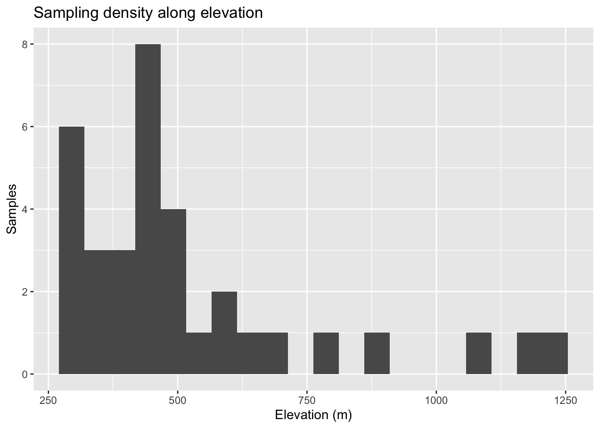
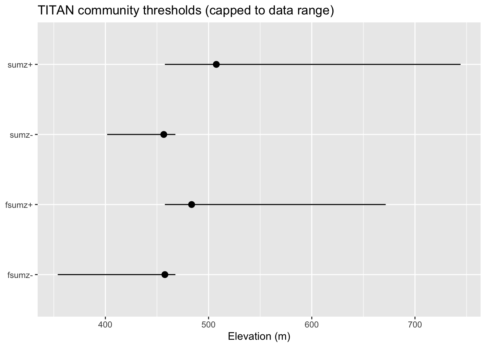
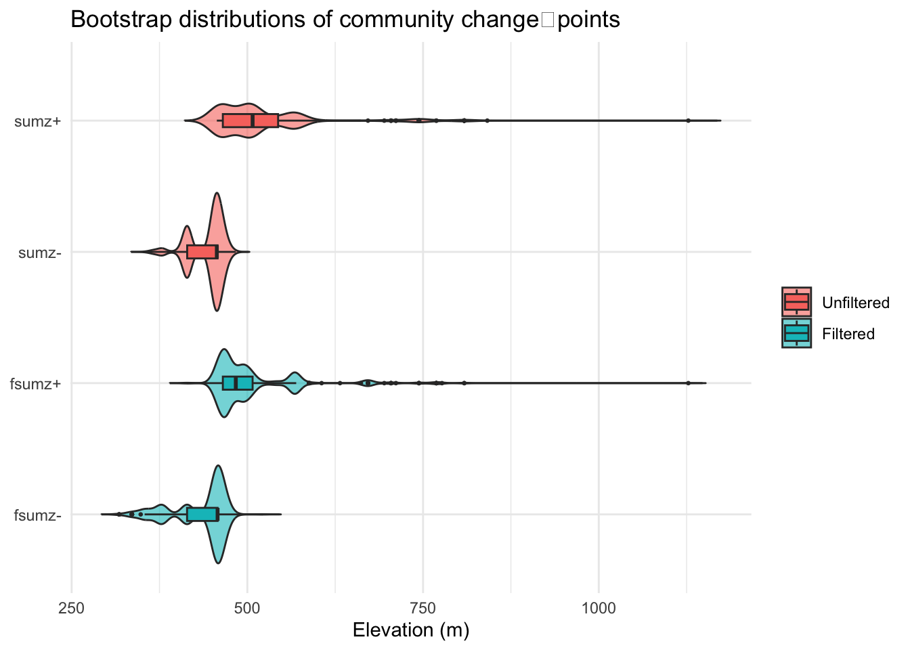
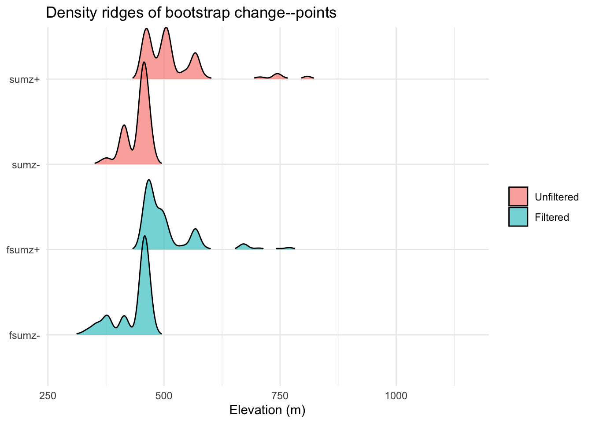
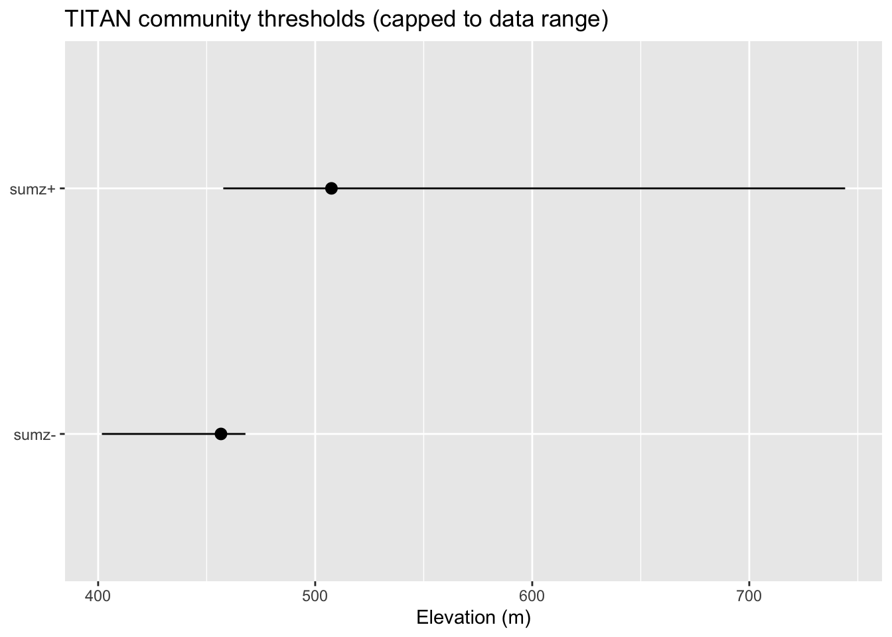
20 📊 Plot 8: Titan per-taxon change-points
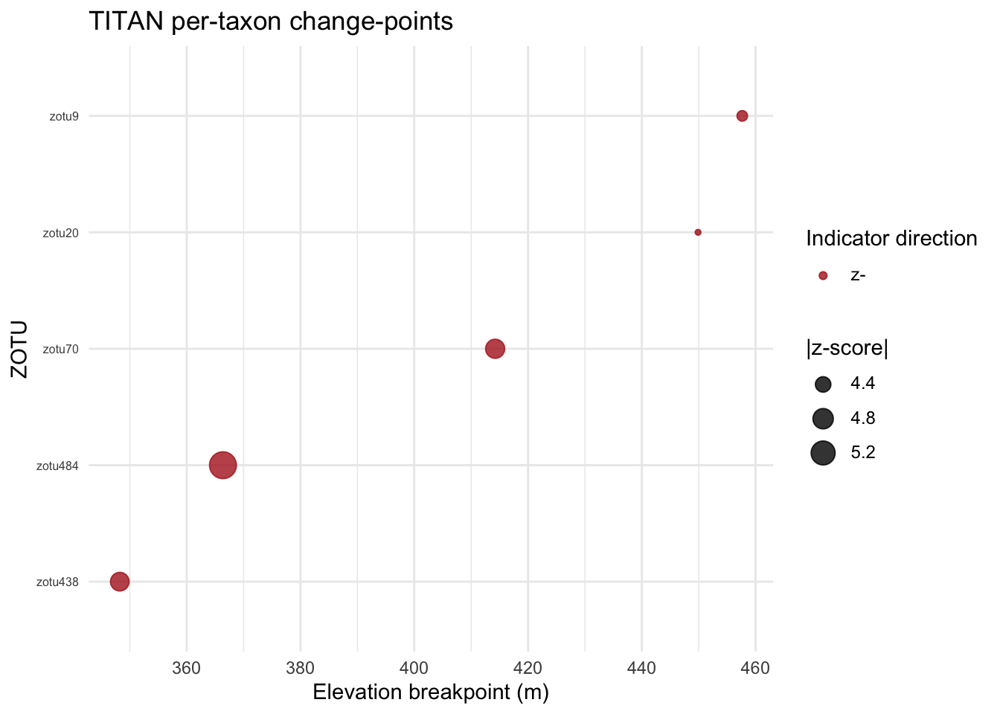
[1] "matrix" "array" num [1:34, 1:854] 723 0 0 0 0 0 0 0 0 0 ...
- attr(*, "dimnames")=List of 2
..$ : chr [1:34] "KA4" "KT0" "POA3" "KA6" ...
..$ : chr [1:854] "zotu1000" "zotu1001" "zotu1003" "zotu1008" ... sample_id richness.x shannon.x sample_site elevation elevation_ft
1 G_AL1 19 1.3896 ʻAiea low 1042
2 G_Al2 23 1.7099 ʻAiea mid 1243
3 G_AL3 20 1.1817 ʻAiea high 1483
4 G_MA1 19 0.9558 Manana low 928
5 G_MA2 22 1.6905 Manana mid 1161
6 G_MA3 14 1.1708 Manana high 1476
elevation_max_diff scientificname commonname shortname island
1 441 Psidium cattleyanum strawberry guava Guava Oahu
2 441 Psidium cattleyanum strawberry guava Guava Oahu
3 441 Psidium cattleyanum strawberry guava Guava Oahu
4 548 Psidium cattleyanum strawberry guava Guava Oahu
5 548 Psidium cattleyanum strawberry guava Guava Oahu
6 548 Psidium cattleyanum strawberry guava Guava Oahu
coord_x coord_y read_sum elevation_m shannon.y simpson richness.y
1 21.40 -157.9 7392 317.6 1.3896 0.6607 19
2 21.40 -157.9 2989 378.9 1.7099 0.7083 23
3 21.41 -157.9 21205 452.0 1.1817 0.4996 20
4 21.43 -157.9 7849 282.9 0.9558 0.4116 19
5 21.44 -157.9 13847 353.9 1.6905 0.7108 22
6 21.44 -157.9 35685 449.9 1.1708 0.4981 14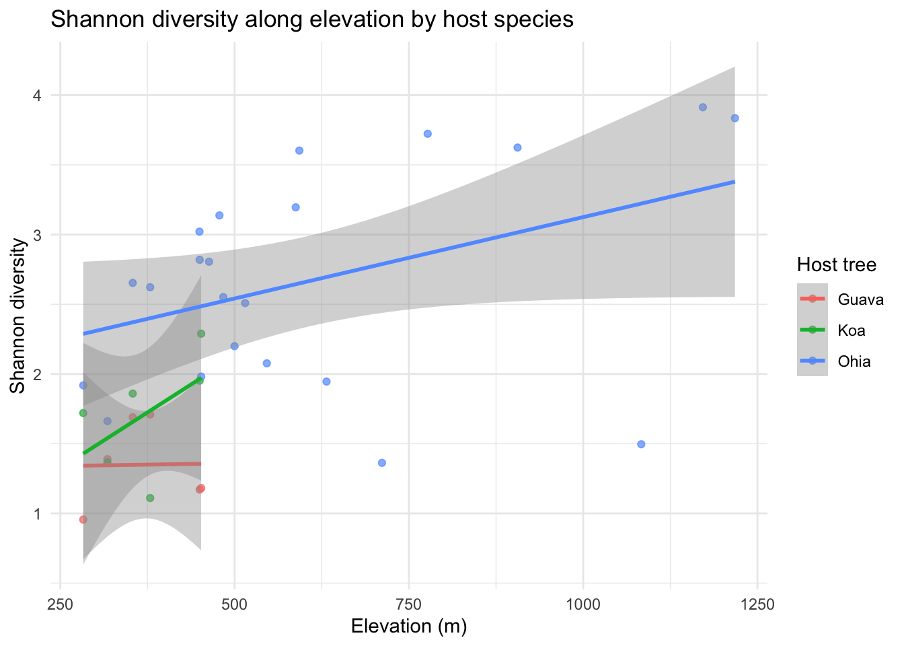
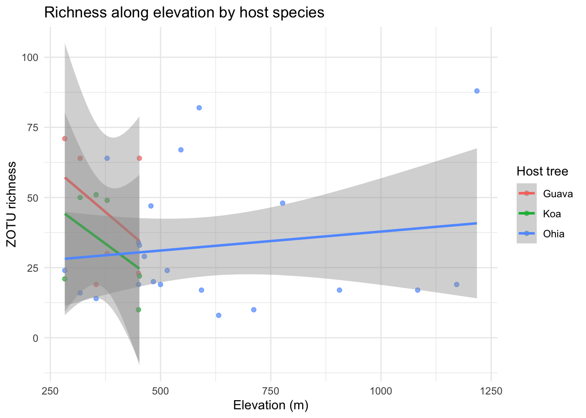
Call:
lm(formula = shannon ~ elevation_m, data = div_df)
Residuals:
Min 1Q Median 3Q Max
-1.328 -0.590 -0.282 0.669 1.615
Coefficients:
Estimate Std. Error t value Pr(>|t|)
(Intercept) 2.644514 0.351164 7.53 1.4e-08 ***
elevation_m -0.000722 0.000609 -1.19 0.24
---
Signif. codes: 0 '***' 0.001 '**' 0.01 '*' 0.05 '.' 0.1 ' ' 1
Residual standard error: 0.856 on 32 degrees of freedom
Multiple R-squared: 0.0421, Adjusted R-squared: 0.0121
F-statistic: 1.41 on 1 and 32 DF, p-value: 0.245Analysis of Variance Table
Response: shannon
Df Sum Sq Mean Sq F value Pr(>F)
elevation_m 1 1.03 1.029 1.38 0.25
shortname 2 1.86 0.931 1.25 0.30
elevation_m:shortname 2 0.73 0.366 0.49 0.62
Residuals 28 20.85 0.744 ienv.cp zenv.cp freq maxgrp IndVal zscore 5% 10% 50% 90%
zotu1016 457.7 457.7 4 1 21.05 1.79 317.6 335.7 451.0 465.1
zotu1017 457.7 457.7 6 1 31.58 3.20 353.9 366.4 457.7 465.3
zotu1045 452.0 452.0 3 1 16.67 1.93 317.6 317.6 414.2 457.7
zotu1052 452.0 452.0 6 1 33.33 2.82 317.6 353.9 452.0 465.1
zotu1054 612.3 612.3 4 2 39.45 4.06 414.2 449.7 612.3 652.1
zotu1066 414.2 414.2 3 2 13.64 0.87 414.2 414.2 467.9 530.7
zotu109 590.2 590.2 3 2 37.50 5.03 515.1 554.0 609.8 994.6
zotu1125 590.2 590.2 3 2 21.67 2.34 353.9 457.7 569.5 811.9
zotu1167 449.9 449.9 3 1 21.43 2.85 353.9 353.9 366.4 451.0
zotu118 507.5 507.5 7 2 50.52 5.28 489.2 496.7 566.9 744.2
zotu12 451.0 451.0 5 1 31.25 3.35 316.7 317.6 449.9 451.0
zotu122 353.9 457.7 6 2 22.22 0.71 335.7 353.9 451.0 590.2
zotu123 507.5 507.5 5 2 32.48 3.28 414.2 414.2 529.4 744.2
zotu124 470.8 470.8 5 2 35.71 4.23 465.1 465.1 507.5 841.4
zotu1265 449.9 449.9 4 1 28.57 4.08 300.2 317.6 414.2 451.0
zotu1270 744.2 744.2 3 2 36.83 5.52 522.6 550.9 630.3 994.6
zotu129 481.0 470.8 3 2 23.08 2.46 467.9 467.9 481.0 994.6
zotu1299 457.7 457.7 3 1 15.79 1.44 414.4 449.7 451.0 457.7
zotu13 470.8 470.8 4 2 17.37 1.04 353.9 353.9 470.8 930.1
zotu144 590.2 590.2 3 2 37.50 5.56 499.4 553.2 590.2 744.2
zotu1451 457.7 457.7 5 1 26.32 2.47 353.9 366.4 451.0 465.1
zotu1452 457.7 457.7 5 2 33.33 4.29 457.7 457.7 538.3 841.4
zotu1454 457.7 470.8 6 1 31.58 2.75 353.9 366.4 457.7 465.1
zotu147 530.7 530.7 5 1 20.83 1.23 353.0 353.9 457.7 530.7
zotu1481 491.8 457.7 8 2 54.12 5.52 457.7 457.7 491.8 841.4
zotu1494 449.7 449.7 3 2 14.29 1.07 401.9 414.4 449.9 590.2
zotu15 470.8 470.8 5 2 24.32 1.88 414.2 414.2 470.8 566.9
zotu151 317.6 452.0 7 1 48.79 3.29 317.6 317.6 378.9 465.1
zotu1541 378.9 378.9 3 1 30.00 3.98 300.2 317.6 378.9 414.2
zotu1543 470.8 470.8 3 2 21.43 2.40 465.1 465.1 543.8 704.4
zotu1548 449.9 451.0 5 1 35.71 3.67 300.2 353.9 378.9 451.0
zotu1557 317.6 353.9 8 1 46.61 2.50 300.2 300.2 353.9 530.7
zotu1564 457.7 457.7 4 1 21.05 1.85 353.9 353.9 451.0 465.1
zotu159 744.2 507.5 3 2 14.87 0.26 353.9 366.4 507.5 841.4
zotu16 470.8 457.7 3 2 21.43 2.26 465.1 465.1 470.8 930.1
zotu1611 457.7 457.7 7 1 36.84 3.39 366.4 414.2 457.7 465.1
zotu168 612.3 612.3 5 2 53.66 4.91 489.1 491.8 612.3 652.1
zotu1687 507.5 507.5 3 2 27.27 3.28 477.7 496.7 507.5 930.1
zotu17 671.6 481.0 12 2 64.10 3.96 456.3 457.7 671.6 841.4
zotu18 530.7 530.7 6 1 25.00 1.36 300.2 317.6 366.4 530.7
zotu184 744.2 744.2 3 2 36.83 5.52 522.6 550.9 630.3 994.6
zotu1848 457.7 457.7 3 1 15.79 1.34 353.9 353.9 451.0 464.2
zotu19 457.7 457.7 4 2 26.67 3.02 457.7 457.7 457.7 905.9
zotu1903 378.9 449.9 5 1 36.23 4.21 353.9 353.9 414.2 451.0
zotu195 457.7 457.7 4 1 21.05 1.86 353.9 353.9 451.0 465.1
zotu1963 378.9 414.2 3 1 27.27 3.21 317.6 335.7 378.9 414.2
zotu1964 378.9 378.9 4 1 36.36 4.85 335.7 353.9 414.2 414.4
zotu198 449.9 449.9 4 1 28.57 3.64 300.2 317.6 449.7 451.0
zotu20 457.7 457.7 23 1 70.08 5.35 414.4 449.7 457.7 465.1
zotu201 451.0 451.0 7 2 28.07 2.15 335.7 409.3 457.7 994.6
zotu203 671.6 470.8 6 2 60.22 4.23 465.1 470.8 671.6 768.9
zotu2114 378.9 378.9 3 1 30.00 3.90 353.9 353.9 378.9 414.2
zotu213 744.2 744.2 3 2 36.83 4.12 353.9 496.7 671.6 808.6
zotu2146 378.9 414.2 4 1 36.36 4.40 353.9 353.9 378.9 414.2
zotu22 590.2 470.8 7 2 40.62 3.09 414.2 414.2 507.5 609.8
zotu223 470.8 470.8 7 2 38.38 3.66 414.2 414.2 470.8 553.2
zotu2238 457.7 457.7 3 1 15.79 1.58 365.7 378.9 451.0 457.7
zotu229 590.2 590.2 3 2 21.67 2.34 353.9 457.7 569.5 811.9
zotu23 353.9 353.9 4 1 57.14 7.14 300.2 300.2 353.9 366.4
zotu240 744.2 744.2 4 2 56.74 5.81 515.0 523.0 744.2 841.4
zotu241 449.9 449.9 4 1 28.57 4.19 353.9 366.4 414.4 451.0
zotu249 744.2 590.2 4 2 34.12 2.70 414.2 449.7 590.2 744.2
zotu25 671.6 457.7 13 2 62.06 3.08 366.4 366.4 566.9 671.6
zotu29 507.5 457.7 11 2 73.96 7.49 465.1 470.8 507.5 671.6
zotu294 481.0 481.0 7 1 33.33 3.09 335.7 335.7 451.0 489.1
zotu305 507.5 507.5 3 2 27.27 3.26 483.6 496.7 507.5 841.4
zotu310 507.5 507.5 3 2 27.27 3.33 489.2 496.7 507.5 684.5
zotu313 744.2 744.2 4 2 56.74 7.60 538.1 551.4 671.6 994.6
zotu317 470.8 470.8 3 1 15.00 1.04 353.9 353.9 451.0 473.5
zotu32 530.7 530.7 5 1 20.83 1.29 353.9 353.9 452.0 530.7
zotu33 414.2 414.2 3 1 25.00 3.19 300.2 317.6 378.9 414.2
zotu331 449.9 449.9 3 1 21.43 2.90 353.9 366.4 449.9 451.0
zotu34 317.6 317.6 3 1 36.83 4.98 300.2 317.6 335.7 452.0
zotu354 507.5 507.5 4 2 36.36 4.47 496.7 499.4 569.5 744.2
zotu384 414.2 414.2 3 2 13.64 0.70 353.9 414.2 470.8 671.6
zotu388 530.7 530.7 3 1 12.50 0.38 366.4 366.4 449.9 530.7
zotu406 414.2 414.2 8 1 54.12 5.50 316.7 317.6 414.2 452.0
zotu42 507.5 457.7 8 2 47.05 4.11 414.2 457.7 543.8 744.2
zotu420 449.9 449.9 3 2 15.00 1.16 400.1 414.4 451.0 507.5
zotu427 566.9 530.7 3 2 33.33 4.09 478.5 543.8 566.9 612.3
zotu438 335.7 452.0 10 1 68.63 5.50 335.7 335.7 351.1 457.7
zotu46 744.2 491.8 6 2 51.18 4.00 481.6 489.1 499.4 744.2
zotu482 481.0 481.0 7 2 53.85 6.45 467.9 473.5 489.1 841.4
zotu484 366.4 366.4 7 1 62.89 7.04 300.2 300.2 366.4 366.4
zotu485 744.2 744.2 6 2 51.18 3.55 414.2 414.2 684.9 768.9
zotu49 452.0 452.0 6 2 26.53 1.99 366.4 366.4 452.0 612.3
zotu529 317.6 457.7 7 1 48.79 2.74 300.2 300.2 353.9 457.7
zotu53 414.2 414.2 5 1 41.67 5.55 401.7 414.2 414.2 414.4
zotu56 449.7 449.7 3 2 14.29 0.91 414.4 449.7 451.0 530.7
zotu563 452.0 452.0 7 1 41.18 4.01 317.6 335.7 451.0 457.7
zotu578 744.2 744.2 5 2 53.81 4.51 457.7 457.7 704.4 768.9
zotu582 353.9 414.2 4 1 39.45 4.07 316.7 317.6 366.4 414.2
zotu60 566.9 566.9 5 2 40.77 4.05 465.1 465.1 566.9 744.2
zotu635 414.2 414.2 4 2 18.18 1.14 414.2 414.2 470.8 908.3
zotu664 530.7 530.7 6 1 25.00 1.47 353.9 353.9 452.0 530.7
zotu67 507.5 457.7 12 2 70.57 6.22 457.7 457.7 507.5 671.6
zotu681 671.6 612.3 3 2 30.11 3.20 413.8 449.9 652.1 905.9
zotu69 566.9 457.7 9 2 56.50 4.92 465.1 470.8 543.8 671.6
zotu690 744.2 507.5 3 2 14.87 0.42 414.2 414.2 507.5 841.4
zotu7 457.7 457.7 17 1 34.24 0.33 317.6 335.7 457.7 994.6
zotu70 317.6 457.7 11 1 61.46 3.83 317.6 335.7 414.2 465.1
zotu71 451.0 451.0 13 2 41.54 2.18 335.7 353.9 452.0 744.2
zotu717 566.9 566.9 6 1 24.00 1.12 317.6 353.3 451.0 566.9
zotu72 566.9 566.9 6 2 51.82 5.89 465.1 470.8 566.9 671.6
zotu74 470.8 470.8 6 2 42.86 5.33 465.1 465.1 507.5 811.9
zotu746 366.4 366.4 3 1 18.83 1.78 353.9 353.9 366.4 457.7
zotu754 491.8 491.8 5 2 41.67 4.86 481.6 483.7 491.8 612.3
zotu770 481.0 481.0 4 2 19.13 1.28 300.2 300.2 481.0 902.2
zotu797 452.0 452.0 3 1 16.67 1.40 353.9 365.1 414.4 457.7
zotu80 744.2 457.7 7 2 48.79 2.93 414.2 414.2 631.9 744.2
zotu87 744.2 507.5 5 2 53.81 5.25 499.4 499.4 671.6 841.4
zotu9 457.7 457.7 14 1 73.68 8.26 335.7 335.7 457.7 467.9
zotu900 378.9 378.9 3 1 30.00 3.98 300.2 317.6 378.9 414.2
zotu955 317.6 449.9 4 1 34.12 2.84 300.2 300.2 353.9 449.9
zotu957 590.2 744.2 3 2 37.50 4.81 499.0 554.0 590.2 841.4
95% purity reliability z.median filter
zotu1016 465.1 0.942 0.316 2.139 0
zotu1017 467.9 0.938 0.620 2.918 0
zotu1045 465.1 0.902 0.230 2.038 0
zotu1052 467.9 0.994 0.692 3.350 0
zotu1054 705.5 0.942 0.602 3.775 0
zotu1066 530.7 0.632 0.106 1.393 0
zotu109 1041.0 0.962 0.678 5.048 0
zotu1125 841.4 0.936 0.364 2.607 0
zotu1167 451.0 0.948 0.388 2.647 0
zotu118 744.2 0.994 0.904 5.094 0
zotu12 451.0 0.996 0.652 3.412 0
zotu122 612.3 0.378 0.322 1.975 0
zotu123 905.9 0.962 0.586 3.501 0
zotu124 841.4 0.994 0.752 4.438 0
zotu1265 451.0 0.986 0.576 3.332 0
zotu1270 1041.0 0.962 0.680 4.898 0
zotu129 1083.3 0.954 0.434 2.826 0
zotu1299 465.1 0.648 0.188 1.622 0
zotu13 1038.8 0.790 0.284 1.842 0
zotu144 747.9 0.958 0.716 4.923 0
zotu1451 465.2 0.956 0.570 2.958 0
zotu1452 841.4 0.994 0.740 4.050 0
zotu1454 467.9 0.942 0.602 2.890 0
zotu147 551.4 0.608 0.194 1.654 0
zotu1481 841.4 1.000 0.972 5.670 2
zotu1494 590.2 0.654 0.116 1.395 0
zotu15 744.2 0.914 0.442 2.482 0
zotu151 465.1 0.998 0.752 3.675 0
zotu1541 414.4 0.956 0.566 3.667 0
zotu1543 744.2 0.966 0.436 2.812 0
zotu1548 451.0 0.994 0.778 4.078 0
zotu1557 530.7 0.986 0.670 3.271 0
zotu1564 465.1 0.932 0.368 2.341 0
zotu159 841.4 0.782 0.224 1.778 0
zotu16 1038.8 0.964 0.410 2.820 0
zotu1611 467.9 0.966 0.762 3.401 0
zotu168 682.3 0.996 0.890 5.724 0
zotu1687 994.6 0.950 0.534 3.629 0
zotu17 903.2 1.000 0.962 5.287 2
zotu18 551.4 0.938 0.442 2.365 0
zotu184 1041.0 0.962 0.680 4.898 0
zotu1848 465.1 0.828 0.184 1.653 0
zotu19 994.6 0.976 0.546 3.034 0
zotu1903 451.0 0.994 0.778 4.191 0
zotu195 465.1 0.938 0.354 2.324 0
zotu1963 414.4 0.942 0.560 3.739 0
zotu1964 414.4 0.986 0.728 4.104 0
zotu198 451.0 0.984 0.562 3.239 0
zotu20 467.9 1.000 0.996 5.538 1
zotu201 994.6 0.850 0.480 2.547 0
zotu203 994.6 0.992 0.890 5.623 0
zotu2114 414.4 0.970 0.568 3.624 0
zotu213 994.6 0.948 0.602 4.136 0
zotu2146 414.4 0.980 0.768 4.648 0
zotu22 629.8 0.988 0.774 4.097 0
zotu223 841.4 0.956 0.722 3.712 0
zotu2238 465.1 0.808 0.246 1.839 0
zotu229 841.4 0.936 0.364 2.607 0
zotu23 367.0 0.986 0.892 6.136 0
zotu240 930.1 0.990 0.838 6.011 0
zotu241 451.0 0.982 0.610 3.337 0
zotu249 744.3 0.938 0.558 3.637 0
zotu25 704.4 1.000 0.940 4.888 0
zotu29 673.3 1.000 0.990 7.302 2
zotu294 496.7 0.990 0.696 3.245 0
zotu305 841.4 0.956 0.550 3.630 0
zotu310 744.2 0.968 0.564 3.740 0
zotu313 1038.8 0.984 0.844 5.896 0
zotu317 473.5 0.772 0.104 1.463 0
zotu32 551.4 0.716 0.220 1.725 0
zotu33 414.4 0.958 0.608 3.827 0
zotu331 451.0 0.948 0.344 2.327 0
zotu34 457.7 0.920 0.432 2.903 0
zotu354 744.2 0.984 0.800 4.702 0
zotu384 671.6 0.748 0.144 1.434 0
zotu388 530.7 0.540 0.100 1.348 0
zotu406 457.7 1.000 0.960 5.534 1
zotu42 808.6 0.998 0.856 4.540 0
zotu420 507.5 0.636 0.118 1.449 0
zotu427 744.2 0.950 0.686 4.542 0
zotu438 457.7 1.000 0.964 5.712 1
zotu46 808.6 1.000 0.924 5.495 0
zotu482 930.1 1.000 0.944 5.527 0
zotu484 401.7 1.000 0.950 6.281 1
zotu485 808.6 0.994 0.686 3.752 0
zotu49 711.4 0.918 0.362 2.084 0
zotu529 465.1 0.996 0.744 3.813 0
zotu53 414.4 0.992 0.866 4.933 0
zotu56 566.9 0.750 0.118 1.446 0
zotu563 465.1 1.000 0.832 4.054 0
zotu578 808.6 0.992 0.748 4.496 0
zotu582 414.4 0.990 0.786 4.693 0
zotu60 744.2 0.998 0.816 4.568 0
zotu635 994.6 0.944 0.278 1.889 0
zotu664 551.4 0.778 0.380 2.146 0
zotu67 671.6 1.000 0.996 7.001 2
zotu681 994.6 0.900 0.408 2.806 0
zotu69 671.6 0.998 0.944 5.694 0
zotu690 841.4 0.806 0.262 1.668 0
zotu7 994.6 0.576 0.378 1.796 0
zotu70 467.9 1.000 0.986 5.728 1
zotu71 994.6 0.854 0.652 2.869 0
zotu717 569.5 0.794 0.268 1.749 0
zotu72 841.4 0.998 0.918 5.614 0
zotu74 841.4 1.000 0.896 4.883 0
zotu746 457.7 0.912 0.282 2.136 0
zotu754 930.1 0.998 0.854 4.710 0
zotu770 994.6 0.626 0.398 2.604 0
zotu797 465.1 0.918 0.208 1.905 0
zotu80 808.6 0.996 0.714 3.659 0
zotu87 930.1 0.996 0.896 5.793 0
zotu9 474.9 1.000 0.996 6.917 1
zotu900 414.4 0.956 0.566 3.667 0
zotu955 451.0 0.984 0.630 4.185 0
zotu957 841.4 0.956 0.674 4.957 0
cp 0.05 0.10 0.50 0.90 0.95
sumz- 457.7 378.9 414.2 456.6 465.1 467.9
sumz+ 457.7 457.7 457.7 503.7 671.6 744.2
fsumz- 457.7 414.2 414.2 457.7 467.9 467.9
fsumz+ 457.7 456.4 457.7 457.7 507.5 546.2Community CP (abundance): 507.5 m | (PA): 503.7 mCommunity CP (abundance): 507.5 m | (PA): 503.7 m21 Summary TITAN
TITAN indicates a reproducible community turnover around ~500 m along the elevation gradient, robust to abundance vs presence/absence coding. The convergence of abundance and PA results suggests the breakpoint reflects taxon replacement rather than abundance shifts. In the context of invasion dynamics, this threshold is consistent with a decline of low-elevation assemblages (expected to include more introduced taxa) and an increase of higher-elevation assemblages. A direct enrichment test (direction × invasion status) can formalize this, but the community-level signal already supports an elevation-linked transition.